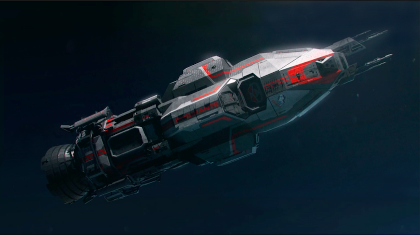

Brief History
Taken from The Expanse Wiki
The Rocinante ("Roci") is a Corvette-class light frigate with multiple roles, such as torpedo bomber and boarding party insertion. Originally commissioned as the MCRN Tachi (ECF 270), the ship was stationed onboard the MCRN battleship Donnager. It was renamed by James Holden after he and his crew used it to escape from the Donnager.
TV and Movie Appearances
The Expanse
Crew
James Holden
Naomi Nagata
Alex Kamal
Amos Burton